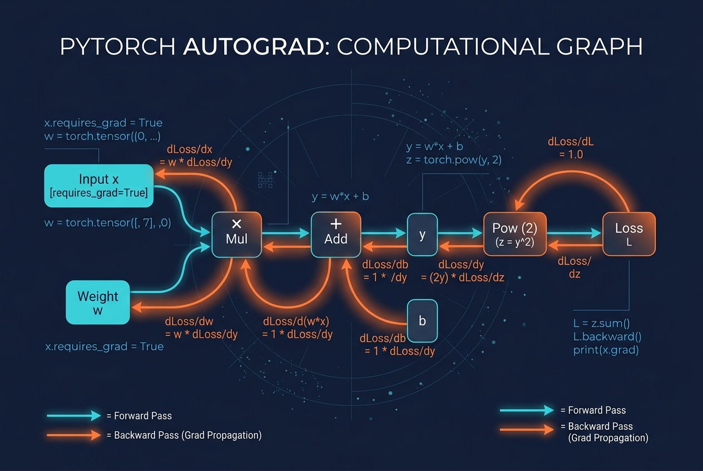

What Autograd Actually Does: Tensor Operations and the Backward Pass in PyTorch
Data Science
Artificial Intelligence
PyTorch
PyTorch’s .backward() is often treated as a black box that returns the right gradient. This article opens the box: leaf tensors, the dynamic graph built by every tensor operation, and how the chain rule is executed in reverse — verified against analytic and numerical gradients, and used to train a small network with no nn.Module and no optimizer.
Author
Prof. Shin
Published
July 14, 2026

[Concept Visualization] A diagram summarizing the key concepts of this post.
The one line that hides everything
Every PyTorch training loop contains the same three lines:
loss = criterion(model(x), y)loss.backward()optimizer.step()
The middle line does the work that makes deep learning possible: it computes the gradient of the loss with respect to every parameter in the model. That single call replaces what used to be pages of hand-derived derivatives, and it does so by walking a graph that PyTorch has silently built during the forward pass. For research code that stays inside the standard modules, treating backward() as a black box is fine. It stops being fine the moment you write a custom loss, a non-standard layer, a physics-informed regularizer, or a training loop that mixes multiple objectives — because then the graph you thought PyTorch was building is not the graph it actually built, and gradients silently become wrong.
This article is about the layer of PyTorch that most tutorials skip: what requires_grad really marks, how the computational graph is assembled by tensor operations, and what backward() does step by step. We verify the mechanics against both an analytic gradient (where the truth is known in closed form) and a numerical gradient (a finite-difference check that treats autograd as an oracle to be tested), and finish by training a small network with autograd alone — no nn.Module, no torch.optim — so the loop is transparent. The design of the system, and the terminology used below, follows Paszke et al. (2019); the general reverse-mode automatic differentiation on which it rests is covered in Baydin et al. (2018) and formalized in Griewank and Walther (2008).
Leaf tensors, requires_grad, and what a graph node is
A PyTorch tensor is not just a numeric array. Every tensor carries three pointers that matter for autograd: requires_grad (a boolean), grad_fn (the operation that produced it, or None if it was created directly by the user), and grad (a buffer for accumulated gradients, filled by backward()). A tensor with grad_fn = None and requires_grad = True is called a leaf tensor. Model parameters are leaf tensors; anything computed from them is not.
The forward computation of y did more than compute a number. Every operator (**, sum, *, +) attached a node to a directed acyclic graph, and each node stored the information needed to compute a local Jacobian on the return trip. The graph is dynamic: it is built again every forward pass, and destroyed after backward() unless you ask otherwise. When you call y.backward(), PyTorch walks that graph in reverse post-order and multiplies local Jacobians together — the chain rule, executed once per edge.
For \(y = x_0^2 + x_1^2 + 3 x_0 x_1\) the derivatives are
y = 31.0
x.grad = [13.0, 12.0]
analytic: [13.0, 12.0]
Two things about that output. First, x.grad was None before the call and now holds the gradient — it is accumulated, not overwritten, which is why training loops call zero_grad() at the top. Second, y had to be a scalar for backward() to run without arguments; a non-scalar output needs a grad_outputs argument that specifies the upstream gradient. That detail is what causes the confusing “grad can be implicitly created only for scalar outputs” error when a beginner tries to call backward() on a batch of losses without reducing first.
Chain rule in reverse: the shape of the backward pass
The forward pass built a graph. The backward pass walks it. For a scalar loss \(L\) and an intermediate tensor \(z\) produced by an operation \(z = f(a, b)\), the local rule is
Reverse-mode automatic differentiation, as formalized by Griewank and Walther (2008), is exactly this rule applied once per node, in reverse topological order, so that by the time we reach a leaf tensor we have accumulated \(\partial L / \partial \text{leaf}\) as a sum over every path from that leaf to \(L\). The graph structure — a DAG whose sources are leaves and whose sink is the scalar loss — is what makes this efficient: intermediate results \(\partial L / \partial z\) are shared across all paths that pass through \(z\), which is why reverse-mode costs roughly one extra forward-pass worth of compute regardless of the number of parameters (Baydin et al. 2018).
Figure 1 sketches the graph for the tiny expression from above. Each solid edge is a data dependency created in the forward pass; each dashed arrow is the local Jacobian propagated backward from y.
Figure 1: Computational graph for \(y = x_0^2 + x_1^2 + 3 x_0 x_1\). Forward edges (solid) were created by operators during the forward pass; backward arrows (dashed) show which local partial derivative is propagated along each edge when y.backward() runs.
The picture is not decoration: it says that x0.grad is a sum of two contributions, one arriving through \(x_0^2 \to y\) and one arriving through \(x_0 x_1 \to 3 x_0 x_1 \to y\). That is where the \(2 x_0\) and the \(3 x_1\) in Equation 1 come from, and it is why any operation that visits a leaf tensor more than once shows up in its gradient more than once.
Sanity check: autograd vs a numerical gradient
For anything more complicated than the toy above, we usually cannot write the analytic gradient by hand — that is the whole point of autograd. But we can still verify it, because the finite-difference gradient
has an error of \(\mathcal{O}(\varepsilon^2)\) from truncation plus roundoff on the order of the working precision, and gives us a black-box reference to compare autograd against. This check is what practitioners write when a new custom operator misbehaves: if autograd and finite differences agree to double-precision noise, the operator is almost certainly correct; if they do not, one of them is wrong and it is usually the new code.
max |autograd - numeric| for W1: 6.617e-09
max |autograd - numeric| for W2: 1.187e-12
Both differences are at the level of finite-precision noise — orders of magnitude smaller than any gradient component we care about — which is the result we would want to see from a passing gradient check. The same routine is what torch.autograd.gradcheck runs internally, and writing custom torch.autograd.Function subclasses without a gradcheck step is a well-established way to ship silent bugs into a training run.
A training loop with only autograd
To make the graph and the backward pass concrete, here is a full training loop that uses neither nn.Module nor torch.optim. We fit a small two-layer network with a \(\tanh\) hidden layer to \(y = 2\sin(x) + 0.3 x\) with added noise, and do the parameter update inside a torch.no_grad() block, because the update itself must not be part of the graph.
Three details in that loop are worth staring at. First, the with torch.no_grad() block: the subtraction p -= lr * p.grad is itself a tensor operation, and if we did it outside no_grad() we would extend the graph into the next iteration and eventually run out of memory. Second, p.grad.zero_(): gradients are accumulated across backward() calls, and forgetting to zero them means every step’s gradient is polluted by every earlier step’s. Third, the loop rebuilds the graph from scratch on each iteration — this is what the “define-by-run” or “dynamic graph” description of PyTorch (Paszke et al. 2019) actually means, and it is why an if inside the forward pass is allowed to route different examples through different subgraphs without any special mechanism.
Figure 2 compares the fit to the underlying clean signal, and Figure 3 shows the loss trajectory on a log scale.
Figure 2: Fit after 600 steps of pure autograd training. The network learns the smooth signal from noisy data; the residuals concentrate around zero with the noise standard deviation we injected. What matters here is that every gradient update was computed by backward() alone — no optimizer, no module.
Figure 3: Training loss on a log scale. The curve drops sharply for the first ~100 steps as the network finds the coarse shape of the sine, then flattens as it fits residual curvature. There is no separate optimizer state (no momentum, no adaptive step size) — the smooth trajectory is what a raw SGD update on a well-conditioned problem looks like.
The fit is close to the underlying signal and the residuals concentrate around zero at roughly the noise standard deviation, which is the best any model can achieve on this task. The loss curve on log scale makes the two-phase behavior visible: a fast coarse fit followed by a slower refinement. Neither figure would tell us anything about autograd itself, but they confirm that a hand-written loop using only leaf tensors, backward(), and no_grad() is a complete replacement for the standard training API — which is what we needed to establish before writing anything non-standard on top of it.
The pitfalls that produce silent wrong gradients
Most autograd bugs do not raise an exception. They produce a gradient that is plausible but not the gradient of the loss you think you are minimizing. Four situations account for almost all of them.
In-place operations on tensors needed for backward. Operators like x.add_, x.mul_, and slice assignment (x[0] = ...) modify a tensor’s storage in place. If that tensor is needed to compute a backward Jacobian — for example, the pre-activation input to an operation whose derivative depends on it — PyTorch raises a runtime error. When it does not raise, it is because the in-place op happened to a tensor whose value was not needed for backward, and that is fine. The safe default is to write functional code (y = x + 1 instead of x += 1) and only reach for in-place ops when profiling shows memory pressure.
Detaching accidentally. The methods .detach(), .numpy(), and .item(), and any wrapping of a tensor into a plain Python scalar, remove the tensor from the graph. This is often what you want in an evaluation block; it is disastrous inside a loss. A common failure mode is normalizing a target with statistics computed via .numpy() and then subtracting inside the loss: the target has no gradient path (which is correct), but if the same trick was used on the prediction, the loss has no gradient path either and the model never learns.
Forgetting zero_grad. As shown above, gradients accumulate. This is sometimes what you want — gradient accumulation across mini-batches to simulate a larger batch is exactly this behavior — but it must be chosen, not accidental. A missing p.grad = None or zero_grad() gives you the sum of every gradient the loop has ever computed, and training either explodes or collapses in a way that looks like a learning-rate problem.
Double backward and retained graphs. By default the graph is freed after backward(). If you need a higher-order derivative (say, a gradient penalty whose gradient you also want) you must pass create_graph=True; if you need to call backward() twice on the same graph you need retain_graph=True. Both cost memory. Both are correct tools when used deliberately and a sign of a design mistake when used out of frustration to make an error message go away.
What autograd costs (and when no_grad matters)
Building the graph is not free. Every operation records a grad_fn, holds references to inputs that will be needed for backward, and prevents those inputs from being reclaimed. The overhead is small relative to the arithmetic of a big matmul, but it compounds when the same forward is run many times for inference. A simple back-of-the-envelope comparison:
forward + backward: 78.9 ms
forward under no_grad: 30.9 ms
training / inference: 2.55x
The ratio is not the interesting number in isolation — it depends on hardware, dtype, and the specific op mix — but it establishes the shape of the answer: training pays for the backward pass and for keeping intermediate activations alive; inference under no_grad skips both. On CPU with the sizes above the factor is a few times; on GPU with attention layers it can be an order of magnitude, and it is the first place to look when an inference server is mysteriously slow.
When autograd is not the right tool
There is no gradient through a non-differentiable operation. torch.argmax, integer casts, thresholded masks, and control-flow-based discrete decisions all block the graph. You can sometimes reach around them with a differentiable surrogate (Gumbel-Softmax for discrete choices, straight-through estimators for quantization) but you should know that you are doing that, not discover it because gradients silently became zero. Second, memory is finite. A very deep graph — a long unrolled RNN, a diffusion process integrated over many steps — may not fit alongside its saved activations; gradient checkpointing trades compute for memory here, and is a first-class feature of torch.utils.checkpoint. Third, some second-order information is expensive: Hessian-vector products are efficient (they use one backward through a backward), but a full Hessian on a million-parameter model is not a plan, it is a wish. And finally, autograd computes derivatives of the code you actually wrote — if the loss you wrote does not measure what you care about, autograd will faithfully minimize the wrong thing.
Conclusion
Autograd is not magic. It is a dynamic DAG built by tensor operations, carrying enough information at each node to run the chain rule in reverse against a scalar output. Understanding it as such buys three practical things: the ability to write custom losses and layers without fear that the gradient is wrong (because a gradcheck will tell you); the ability to read the performance profile of a training loop (because the cost of the backward pass and the cost of keeping activations alive stop being mysterious); and the ability to debug the training-loop failures that make no sense — silent zeros, exploding gradients, memory that grows without bound — because they almost always trace back to one of the pitfalls above. The next post in the PyTorch series builds on this foundation and takes it into the data pipeline: implementing a sliding-window DataLoader for time series, where the same concerns about graph construction reappear, this time interacting with batching and shuffling.
References
Baydin, Atilim Gunes, Barak A. Pearlmutter, Alexey Andreyevich Radul, and Jeffrey Mark Siskind. 2018. “Automatic Differentiation in Machine Learning: A Survey.”Journal of Machine Learning Research 18 (153): 1–43. https://jmlr.org/papers/v18/17-468.html.
Griewank, Andreas, and Andrea Walther. 2008. Evaluating Derivatives: Principles and Techniques of Algorithmic Differentiation. 2nd ed. SIAM. https://doi.org/10.1137/1.9780898717761.
Paszke, Adam, Sam Gross, Francisco Massa, et al. 2019. “PyTorch: An Imperative Style, High-Performance Deep Learning Library.”Advances in Neural Information Processing Systems 32 (NeurIPS 2019), 8024–35.